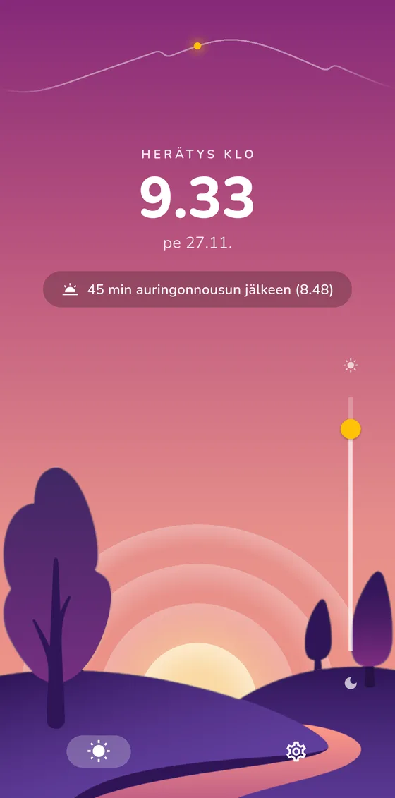

Auringonnousu siirtyy vähän joka päivä. Niin pitäisi herätyksenkin. Wake at Sunrise laskee huomisen auringonnousun juuri sinun sijaintiisi ja soi silloin – tai sopivan monta minuuttia ennen tai jälkeen.

Näin se toimii
Sovelluksen täytyy tietää, missä päin maapalloa heräät. Se on ainoa asia, jota se pyytää – ja se pysyy puhelimessasi.
Herätys tasan auringonnousun aikaan tai minuutteja ennen tai jälkeen. Valitse, minä viikonpäivinä herätys on päällä.
Joka yö herätys suuntaa itsensä hiljaa huomiseen auringonnousuun. Kun aamunkoitto siirtyy vuoden mittaan, herätyksesi siirtyy sen mukana.
Ominaisuudet
Yksi tehtävä – herättää sinut aamunkoitossa – huolella tehtynä.
Ei kaupungin keskiarvoa – vaan todellinen auringonnousun aika siellä, missä puhelimesi on, laskettuna laitteella tähtitieteellisin kaavoin.
Kerro, kuinka paljon unta haluat ja kuinka pitkän rauhoittumisajan tarvitset. Sovellus laskee taaksepäin huomisesta auringonnoususta ja muistuttaa sinua menemään ajoissa nukkumaan.
Kaavio auringonnousun ajan vaihtelusta koko vuoden mittaan – piste merkitsee tätä päivää – joten tiedät, mitä kohti aamusi ovat menossa.
Soi lukitusnäytön päällä, selviää uudelleenkäynnistyksistä ja voi ohittaa järjestelmän äänenvoimakkuuden, joten hiljennetty puhelin ei tarkoita myöhästynyttä aamua.
Ei sääpalvelua, ei palvelinta. Auringonnousu lasketaan paikallisesti, joten herätys toimii lentotilassa ja kaukana kaikesta.
Kokonaan käännetty, ja torkun kesto, äänenvoimakkuus ja herätyspäivät ovat kaikki säädettävissä.
Tietosuoja
Sovelluksen ainoa merkittävä lupa on sijainti – ja sitä käytetään tasan yhteen asiaan: auringonnousun laskemiseen siellä, missä olet.
Ennakkokäyttö
Wake at Sunrise aloittaa pian suljetun beetatestin Androidilla. Liity testaajaryhmään, niin saat asennuslinkin heti, kun testi avautuu.
Liity testaajaryhmäänIlmainen, mitään ei tarvitse ostaa. Käytä sitä Google-tiliä, jolla aiot asentaa sovelluksen – siitä Google Play tietää näyttää sovelluksen sinulle.
Ennakkokäyttö
Wake at Sunrise on suljetussa beetatestissä Androidilla. Kaksi nopeaa vaihetta, ja se on sinun – palautteesi muokkaa julkaisua.
Google Play tarvitsee tilisi testaajaluetteloon ennen kuin se näyttää sovelluksen sinulle. Joko liityit? Siirry vaiheeseen 2.
Liity ryhmäänAvaa tämä puhelimella, jolla testaat, kirjautuneena samalle Google-tilille.
Avaa testi Google PlayssaTestaaminen on ilmaista, eikä mitään tarvitse ostaa. Pidä sovellus asennettuna pari viikkoa – Google laskee yhtäjaksoiset testaajat ennen kuin se päästää uuden sovelluksen julki.
Lataa
Wake at Sunrise on saatavilla Google Playssa. Ilmainen, ei mainoksia, ei tiliä.
Lataa Google PlaystaEnnakkokäyttö
Wake at Sunrise on viimeistelemässä suljettua beetatestiä Androidilla. Haluatko mukaan? Lähetä lyhyt sähköposti, niin saat linkin.
Pyydä beetalinkkiä